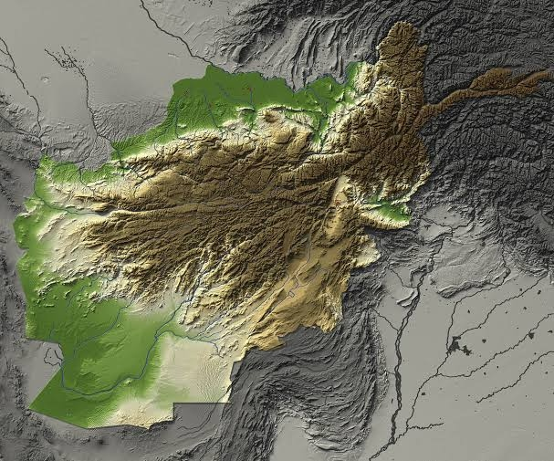

On August 1, a group called the Afghan United Front started publicly claiming armed operations against the Taliban. The organization itself is not new. It has existed since 2023, holding meetings, giving interviews, testifying in Washington, and occasionally hinting that it would fight one day. What changed this month is that it began attaching its name to specific attacks, in specific provinces, on specific dates — including in Kandahar and Helmand, the two provinces the Taliban consider home ground.
That shift raises a question worth taking seriously, and it is not "will the AUF topple the Taliban." It won't, and nobody credible is arguing it will. The question is narrower and more useful: is there now a real AUF network operating inside Afghanistan behind those claims, or are we looking at a well-connected exile organization with a good media operation and a loose relationship to violence that would be happening anyway?
I don't think the public evidence settles that yet. But the evidence we do have is worth laying out carefully, because both answers have consequences.
The claims record so far
The AUF's public debut ran through FDD's Long War Journal, which published an interview with the group's leader on August 1 alongside the first claims. That choice of venue is itself a data point, and I'll come back to it.
The opening claim was odd. The AUF took credit for an attack in Kandahar that killed two Taliban fighters — but the attack was nearly a year old. Claiming an operation eleven months after the fact tells you something about how the group wants to build a track record, and it is one of the details I keep in mind when weighing everything that came after. A second claim followed the same day, this one current: a small raid in Lashkar Gah, Helmand.
Over the following week, the group claimed a run of additional operations, each framed the same way. In Badghis, the killing of two Taliban members the AUF said had participated in torturing former security forces personnel. In Ghor, an assault on a Taliban base — two killed, four wounded, weapons seized — presented as retaliation for the killing of a woman who had served in the Republic-era Afghan National Police. In Farah, the assassination of a member of Taliban intelligence. In Kandahar, two guards killed at a police station, plus two more targeted killings of intelligence personnel. By August 9, the AUF was claiming a running total of 18 Taliban fighters killed and 13 wounded across eight provinces, along with a drone strike on a fuel storage site in Kabul.
Evidentiary status
Every figure above comes from the AUF itself, mostly via the Long War Journal. Some claims have been picked up by Afghan outlets and some include video. Independent confirmation of the casualty totals, of who actually carried out each attack, and of the size of whatever network exists behind them is still thin. That is the honest state of the record two weeks in.
What the claims do show, even taken purely as messaging, is discipline. The AUF is consistently targeting Taliban intelligence and security personnel, and it is consistently linking individual attacks to specific alleged crimes — torture, detentions, killings of former Republic forces. Whether or not every operation happened as described, someone is putting real thought into giving this campaign a recognizable political logic: this is retribution against the repression apparatus, on behalf of the people who served the previous state. That framing is aimed as much at former ANA and NDS personnel still inside Afghanistan as it is at foreign audiences.
Who Sami Sadat is
The AUF's leader is Sami Sadat, a former lieutenant general in the Afghan National Army, elected to lead the group in 2023. If you followed the last years of the Republic, you know the name. Sadat spent most of his career in the intelligence and special operations world: years inside the NDS, including in its covert action apparatus, command of a joint special operations unit, and training at Western military institutions including Britain's Joint Services Command and Staff College. In 2021 he commanded the 215th Maiwand Corps in Helmand, and in the final weeks before the collapse he was given command of the Afghan special operations corps.
Two things about that biography, and both matter.
First, the credentials are real. Sadat is one of a relatively small number of former Afghan commanders with genuine clandestine-operations experience, existing personal networks in the south, and fluency in Pashto. Most of the organized armed resistance since 2021 — the National Resistance Front, the Afghan Freedom Front — has been rooted in northern, largely Tajik, Uzbek and Hazara networks. A campaign run out of Kandahar and Helmand needs a different kind of commander, and on paper Sadat fits.
A note on ethnicity, since much of the coverage flattens it. The Long War Journal has presented the AUF as the first major Pashtun-led resistance organization, and describes Sadat as Pashtun. Sadat himself has described his family as belonging to the Sadat, a smaller Sayyid-descended community, and his background is more layered than the "Pashtun general" shorthand suggests. Operationally I'm not sure the label matters much. What matters is that he speaks Pashto natively, commanded troops in the south, and is recruiting in communities the northern resistance has never been able to reach. The AUF, for its part, markets its leadership council as deliberately multi-ethnic.
Second, and this needs saying plainly: Helmand collapsed under Sadat's command in 2021. The background gives him networks and experience. It does not give him a free pass on competence.
His defenders point to the impossible strategic position every Afghan commander was in after Doha, and there is substance to that. But his critics inside the Afghan diaspora have not forgotten, and any assessment that treats his command record purely as a credential is doing half the work.
Why the south matters
If the AUF's southern claims are even partly real, they change the geography of this conflict in a way that matters more than the body counts.
The Taliban's core assumption since 2021 has been that armed resistance is a northern problem — containable in Panjshir, Baghlan, Badakhshan, manageable through garrisons and periodic sweeps, and politically dismissible as the grievance of ethnic minorities who lost the war. Kandahar is where the Taliban's supreme leader lives. It is the movement's spiritual and administrative center of gravity. Sustained attacks there, however small, attack the assumption itself.
Sadat has been explicit about this. He told the Long War Journal that Kandahar was chosen deliberately, to show the Taliban that "there is nowhere safe from our attacks." Strip out the bravado and the underlying logic holds: a campaign in the south forces the Taliban to police its own heartland, to treat Pashtun communities and former security personnel there as suspect populations, and to spread an intelligence apparatus that is already stretched. Repressive systems can absorb violence at the periphery for a long time. Violence at the center is a different kind of problem, even at low intensity.
That is the theory, anyway. Whether the AUF can sustain activity in the south is exactly the thing the public record does not yet establish.
Three explanations
As I see it, there are at least three readings of what the AUF actually is right now, and the current evidence does not let us pick one with confidence.
The first is that Sadat has spent three years doing what he says he has been doing: quietly activating former security personnel, building cells in the south, arranging logistics and communications, and waiting to start on his own terms. His stated timeline — years of preparation, a deliberate choice of moment — is consistent with how he operated as a commander, and the tradecraft implied by some of the claimed attacks (identifying and tracking individual intelligence officers, tying them to specific abuses) would require real penetration of Taliban structures.
The second is that the AUF is a coordination layer or a brand: a common flag and a claims channel sitting on top of a much looser set of local cells, personal feuds and small groups that were already carrying out sporadic violence. In this reading the AUF adds messaging discipline and international connections, and the network is thinner than the communiqués imply.
The third is that at least some of the claims are opportunistic — violence the AUF did not organize, absorbed into its ledger after the fact. The year-old Kandahar attack claimed on day one is the concrete reason this hypothesis has to stay on the table. A group confident in its current operational tempo does not usually need to reach eleven months into the past for its opening announcement.
My read: the first two are both plausible and probably both partly true, and the third cannot yet be excluded for individual claims even if the campaign as a whole is real. Insurgent organizations at this stage are usually messy mixtures of all three.
The Washington connection
The foreign-support question follows the AUF everywhere, and it deserves precision rather than insinuation.
Here is what is documented. Sadat is based in Virginia. He testified before the House Foreign Affairs Committee in November 2023. He trained at Western institutions, maintains relationships in Washington from two decades of coalition warfare, and has openly and repeatedly asked NATO countries for material support against the Taliban — he is not hiding the ask, he is making it on the record.
Here is what is not documented: any public evidence that the United States or any other government is directing, funding or supplying AUF operations. None so far.
Those two paragraphs need to be kept apart. Access and outreach are real, and they matter — an exile group with a Virginia office and congressional testimony behind it has options that a valley-based militia does not, and the choice to debut through a Washington-aligned outlet like the Long War Journal tells you who the intended audience of this launch was. But conflating documented access with covert backing is exactly the analytical shortcut that produces confident, wrong stories. If evidence of state support emerges, it will most likely show up indirectly first: in the sophistication and consistency of AUF operations, in the kinds of equipment recovered by the Taliban, in patterns that a self-funded exile network cannot easily explain. Watch for that. Don't assume it.
There is one more actor worth naming here. Pakistan has been fighting an on-again, off-again border war with the Taliban government since October 2025, and Islamabad's intelligence services have every incentive to cultivate instruments that degrade Kabul from within. I have seen no evidence connecting the ISI to the AUF, and Sadat's history of running operations against militants inside Pakistan makes the relationship anything but natural. But in this region, incentive structures like that one rarely go unexplored forever, and it belongs on the list of things to monitor.
Why the timing is dangerous for Kabul
The AUF on its own is a manageable problem for the Taliban. The AUF arriving in August 2026 is a different matter, because it lands on a government that is already fighting on several fronts at once.
The most acute is Badakhshan. The Taliban's dispute with Juma Khan Fateh — a Tajik Taliban commander, long the dominant power broker in the province's gold mining economy — has broken into open fighting. Fateh was moved out of Badakhshan earlier this year and made deputy governor of Zabul, a transfer he effectively refused; the Taliban then detained associates and relatives, cracked down on mining operations, and in recent weeks the standoff has escalated into armed clashes around the Darwaz districts, an audio message from Fateh calling his supporters to war against the movement, targeted killings of Taliban officials in the province, and a formal protest from Tajikistan over airspace violations during the fighting. Meanwhile the Afghan Freedom Front has been running some of its most effective operations to date in the same province. However the Fateh dispute resolves, the Taliban is now committing forces and senior attention to a fight inside its own ranks, in the northeast, at exactly the moment a new southern front is being announced.
Layer onto that the Pakistan border war, which has periodically drawn Taliban forces to a long frontier they cannot adequately monitor, the persistent Islamic State Khorasan threat, and an economic and humanitarian situation that gets worse every quarter as deportations from neighboring countries pile returnees onto a broken food system. None of these pressures is individually fatal. The Taliban's problem is that they are accumulating, and that the movement's answer to every one of them is more repression, which is precisely the grievance the AUF has built its messaging around.
A second front in the south does not need to win battles to matter. It needs to exist, persistently, in places the Taliban thought were safe.
What I'm watching
The next couple of months should tell us most of what we need to know, and the indicators are practical ones.
Repeated, independently reported attacks in Kandahar and Helmand — not a burst in week one that fades by October. Casualty figures confirmed by Afghan outlets with local sourcing rather than by the AUF's own graphics. Taliban behavior: arrests of alleged AUF members, sweeps in southern districts, recovered weapons and equipment, public statements acknowledging the group — a government's counterintelligence reaction is often a better measure of a clandestine network than the network's own claims. Evidence of coordination across provinces, which separates an organization from a franchise. And on the foreign-support question, any equipment or tradecraft that a self-funded exile group cannot plausibly account for.
If those start appearing consistently, the AUF has to be treated as a real addition to the anti-Taliban field, and the map of this conflict gets redrawn to include the south. If they don't, we are looking at a claims operation with good connections, and the story stays in Washington rather than Kandahar. Either way, I'd rather report which one it is than predict it. The record so far buys the AUF attention. It has not yet bought it belief.